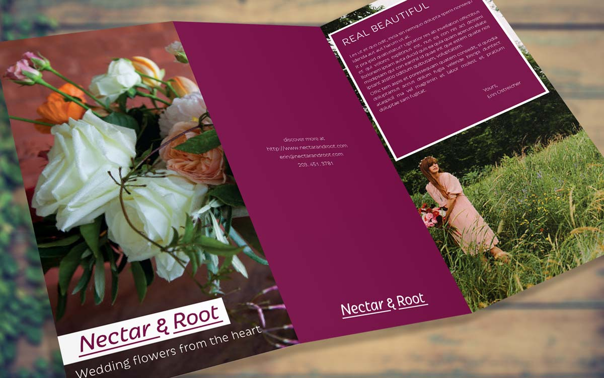

Nectar & Root
Nectar & Root was a rebranding project I did for a wedding and floral company in Vermont. A big focus on their services is their personalized floral arrangements, and I wanted to call a lot of attention to that fact.
Made using: Illustrator, Photoshop
Brand items

An idea I thought would help to show their personalization and thought that went into each floral arrangement would be a tag attached to each bouquet that served as both a memento and info card. On each card would be a list of the flowers chosen in the bouquet as well as their meaning and what made them suitable for that occasion or that couple.
I also wanted to create the business cards for the company to use; something that was delicate, but purposeful. I imagined a gentle typeface onset to a textured material card, representing the Earthy nature of the brand.
Style Tiles


Even after doing research I wasn't sure if I wanted to focus on education or fun when designing the visual elements of this app. I went through a few different style tiles, choosing different themes and seeing what worked and what didn't. After conversing with my peers I decided to put emphasis on fun and adventure, ultimately landing with a golden yellow for my primary color and a system where each subject had its own corresponding color (Blue for history, green for math, etc).